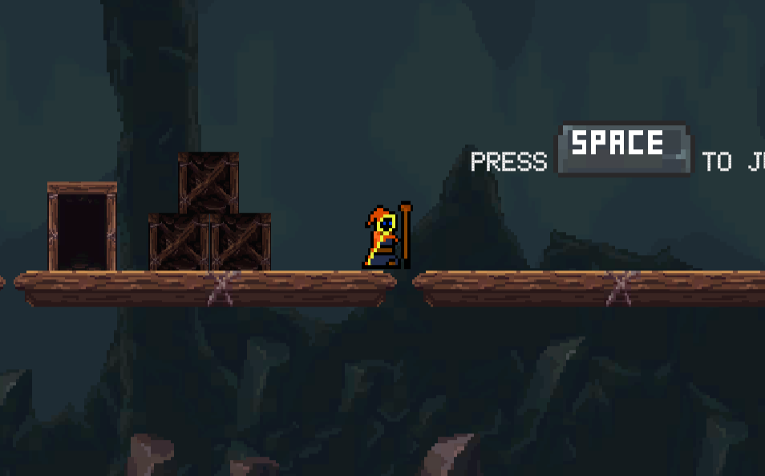
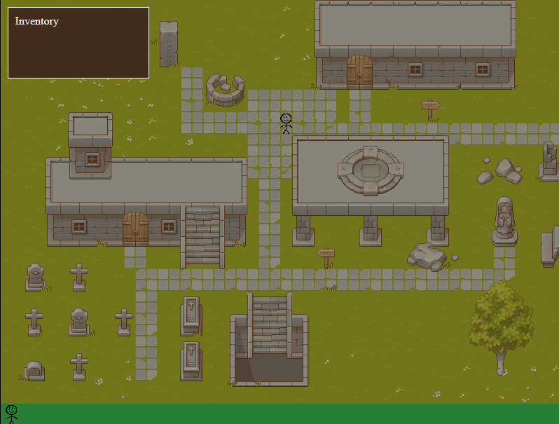

This showcase is all about low poly stuff. The models are not made by me. It's for a VR game that's currently finished! In this showcase, I have made a couple of stuff that includes things like arrow shooting physics and enemy collision.
Stuff to see right now:
- Wind trails
- Village
- Paths
- Dust particles
- The whole map in general
- Enemy behaviour (Patrolling, chasing the player and dying)
- Actual archery mechanics (Like shooting with the bow)
Finished!This showcase is all about low poly stuff. The models are not made by me. It's for a VR game that's soon to be showed here because it's still in the making! But any way, I thought I could show this awesome showcase as the map for the Archery VR game I've been making for school and soon to be playable. More content of this coming up!
Stuff to see right now:
- Wind trails
- Village
- Paths
- Dust particles
- The whole map in general
Not done yet!My first ever mobile game. This was just especially to aim to the functionality of the game
So far it went well. Got a good grade for this anyway. And I sure was proud of it!
Stuff I added:
- Keys to pick up and unlock the door
- Dashing
- Dying from enemies
- Smooth camera follow
- Camera zooming out whenever I enter an area or get near an enemy
This is my game for period 5. I kinda rushed everything with design. I've spent time the most on scripting.
Stuff I added into the game:
- Dash
- Shoot
- Die from enemy or object collision
I made a webshop where I had to test my javascript skills. In this project I had to make a cart system where everything will get added and removed. My code is kinda messy but I was never good in javascript. I haven't got a grade back. I think it's fine
I used Webstorm for this. HTML CSS and Javascript
I made a game for the subject called personality I had from previous year. This game was to show everything I was proud of. The game is still there on itch.io.
I have got a very good grade from this. Which I was very proud of. From this project, I learned to make keybinds for certain stuff like replay and mute. And what I also learned was making animations. I used C# for this game and where I made it was on Unity.
Here's the actual link to everything you can see:
Since I was such an enthusiast about physical computing. I modified my raspberry pi pico to run payloads. I made a harmless payload that talks to you, gets your computer information and location.
This gave me a good grade after all. It was fun since it was something I liked. I learned a lot. I feel like I've learned that I can do stuff with psysical computing. I used only a usb cable and notepad.
This project was kind of rushed, but I did it. It was indeed difficult. Since it was in Javascript for the first time.
My first ever game. This game was made last year when I had to make a game for school. This is not my proudest work and I have made better things than this.
This game was made in Unity with C#. I got a good grade from this assignment. It went very well. I've really learned stuff about how thirdperson and firstperson can be a lot to code. But it went well after all.
I made this first ever project in Visual Studio. There's nothing much to say since this was my first ever project I coded all by myself.